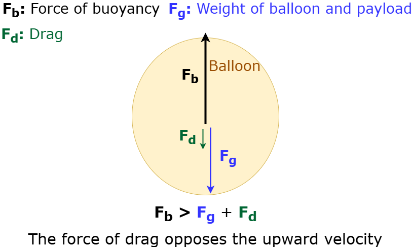
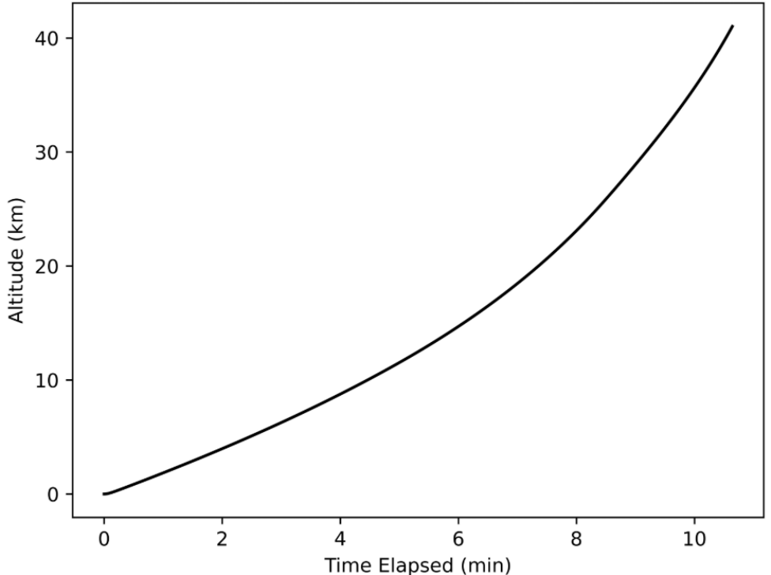

09 / Atmospheric flight modeling / Completed modeling study
AE311 · Technical lead · Three-person team
Modeling balloon ascent to compare hydrogen and helium for a 35 km mission
As technical lead, I modeled how much lifting gas a balloon would need to carry a 3 kg payload to 35 km before bursting. I connected atmospheric conditions, latex-envelope expansion, and vertical motion in a Python simulation, then used repeated runs to support the team’s hydrogen-versus-helium gas-cost recommendation.
- My contribution
- Technical lead: mathematical model, Python simulation, plots, and solution documentation
- Tools
- Python · Numerical integration · Buoyancy · Trade studies
- Outcome
- Report selected 0.43 kg hydrogen as the lower gas-cost case

Make the cost question physically meaningful
The team’s mission requirement was to reach at least 35 km with a 3 kg payload before the balloon burst. Gas species and initial gas mass were the variables we could change. A simple lift calculation at launch would not answer the question: the atmosphere changes throughout ascent, and the balloon expands as external pressure falls.
I was responsible for simplifying the problem, developing and documenting the mathematical model, implementing the simulation, and producing plots. We represented the envelope as a spherical natural-latex shell so that its volume, mass, stress, and motion could be connected within an academic model.
Connect the atmosphere, envelope, and motion
I derived buoyancy by integrating pressure over the balloon surface, then combined it with gravity and drag to calculate vertical acceleration. Piecewise atmosphere functions supplied temperature, pressure, and density at the current altitude; ideal-gas and latex-envelope relations supplied the changing balloon size.
The implementation had to update these quantities together rather than treat them as independent inputs. The radius calculation selected a physical positive root, envelope expansion changed the geometry, and a stress comparison determined when the simulated ascent stopped. Euler integration advanced velocity and altitude through time.
Turn repeated simulations into a design comparison
The program increased gas mass in 0.01 kg steps until the altitude criterion was met, recording trial results in a CSV table. Trajectory, velocity, diameter, and failure-margin plots made the calculation inspectable beyond a single final answer. NumPy, Matplotlib, and pandas connected the numerical work to the report’s gas comparison.
This work demonstrates the full path from a physical requirement to equations, a computational procedure, and a documented engineering recommendation. The plots explain how a changing environment affects the system, while the trial table connects those calculations to the gas-mass decision.


Recommendation and the confidence it supports
The report selected 0.43 kg of hydrogen over 0.95 kg of helium as its lower gas-cost case.
Both selected cases exceeded the altitude target in the submitted calculations. The conclusion was a gas-cost recommendation under the report’s historical price assumptions, rather than a comparison of complete launch costs.
The study’s value is the coupled modeling and comparison process. Its spherical-envelope assumption, constant drag coefficient, omitted wind and payload drag, and simplified failure treatment limit predictive confidence. The submitted implementation was not independently validated, so the selected masses remain report findings rather than a flight-qualified configuration.